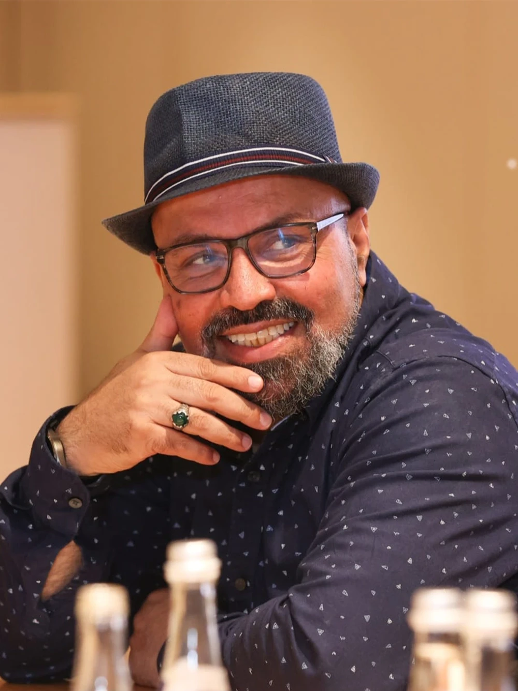
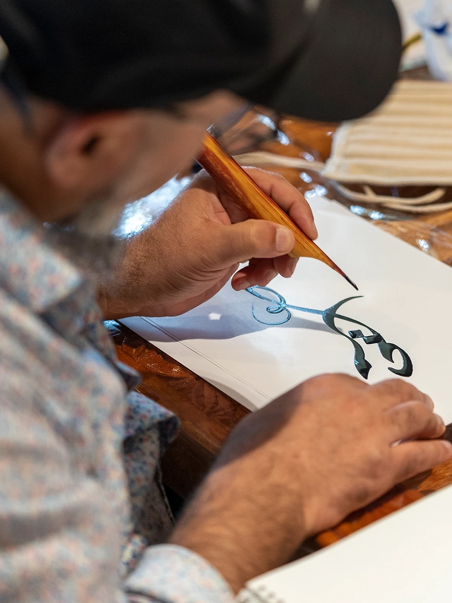
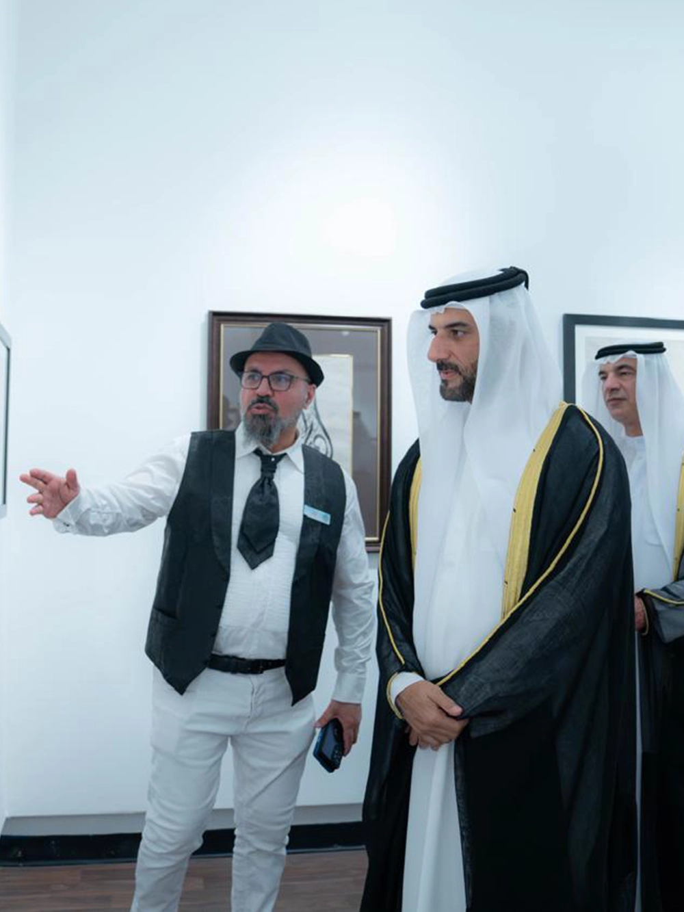
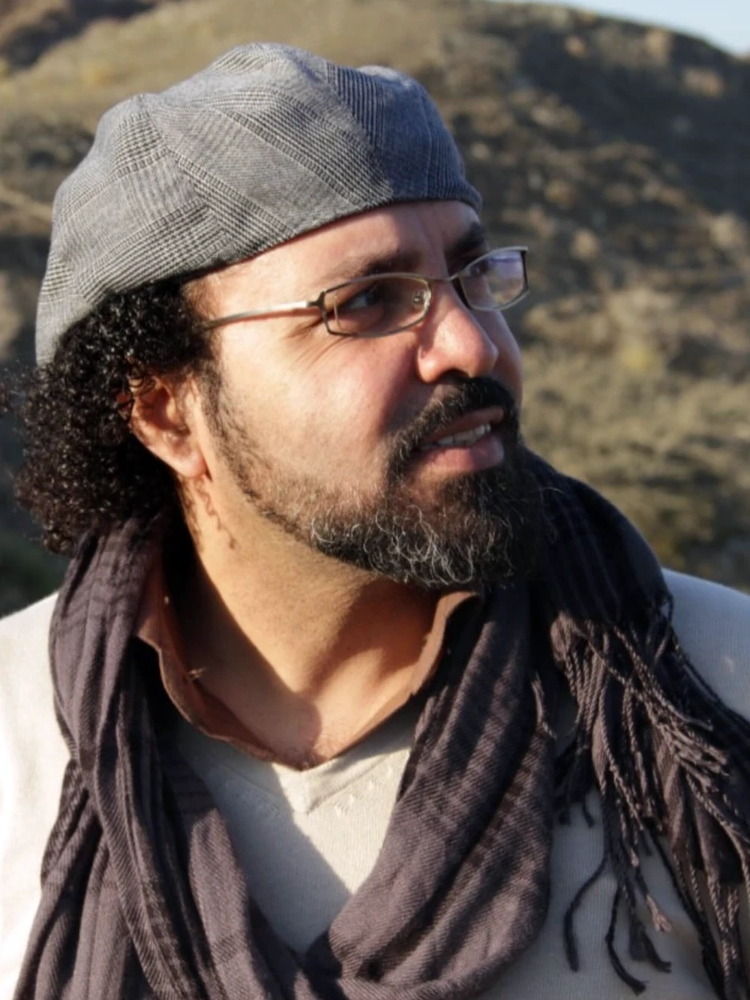
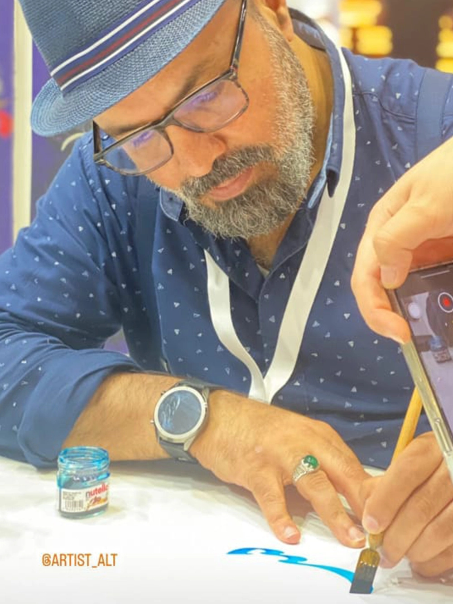
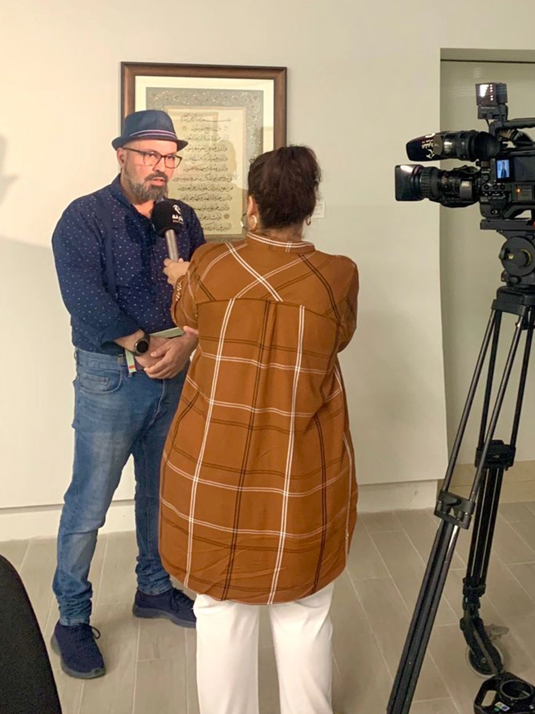
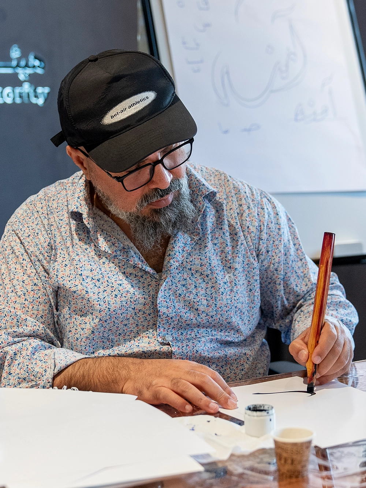

The Artistالفنان
Altayeb Amerالطيب عامر
Artist & Multimedia Creative Consultantفنان ومستشار إبداعي متعدد الوسائط
One Soul · Seven Worldsروح واحدة · سبعة عوالم
More than three decades of art in motionأكثر من ثلاثة عقود من الفن في الحركة







Altayeb Amer الطيب عامر
Altayeb Amer is a multidisciplinary artist and creative consultant based in Dubai, with over thirty years of professional experience in Arabic calligraphy, fine arts, digital art, visual design, photography, and art education — and a lifelong passion for painting purebred Arabian horses and pioneering the frontiers of AI-driven art. الطيب عامر فنان متعدد التخصصات ومستشار إبداعي مقيم في دبي، يتمتع بخبرة احترافية تمتد لأكثر من ثلاثين عاماً في الخط العربي والفنون الجميلة والفنون الرقمية والتصميم البصري والتصوير الفوتوغرافي والتعليم الفني، وهو عاشق لرسم الخيول العربية الأصيلة ورائد في استكشاف آفاق الفن المدعوم بالذكاء الاصطناعي.
Born in Syria in 1971, Altayeb showed an innate artistic sensibility from childhood — redrawing classic anime characters like Grendizer from memory for his classmates. He taught himself charcoal portraiture and opened his first atelier at age twenty. His formal career began in the mid-1990s at the Academy of Fine Arts in Damascus, where he excelled across all disciplines: drawing, graphic design, sculpture, interior design, and visual communications. Through sustained artistic research, he merged Western abstract expressionism with an Eastern spirit to forge a visual language entirely his own. وُلد في سوريا عام ١٩٧١، وأظهر حساً فنياً فطرياً منذ الطفولة — يعيد رسم شخصيات الأنمي الكلاسيكي كغراندايزر من ذاكرته أمام زملائه. تعلّم ذاتياً رسم البورتريه بالفحم، وافتتح أول أتيليه له في سن العشرين. بدأت مسيرته الرسمية في منتصف التسعينيات في أكاديمية الفنون الجميلة بدمشق، حيث تميّز في جميع التخصصات: الرسم والغرافيك والنحت والديكور والاتصالات البصرية. وعبر بحث فني متواصل، مزج بين التعبيرية التجريدية الغربية والروح الشرقية ليُنتج لغة بصرية خاصة به.
In 2012, he discovered Arabic calligraphy by chance. He studied the classical scripts rigorously according to their traditional principles and rules, before expanding toward contemporary Hurufiyya — where the letter is liberated from language and becomes pure visual rhythm. في عام ٢٠١٢، اكتشف الخط العربي بالصدفة. تعلّم فقه الخط الكلاسيكي وأسراره وفق أصوله وقواعده، قبل أن يتوسع نحو الحروفية المعاصرة — حيث يتحرر الحرف من اللغة ويصبح إيقاعاً بصرياً خالصاً.
A lifelong love of purebred Arabian horses — observed since childhood whenever the opportunity arose — became a sustained artistic and human project. This passion led him to train AI systems to understand the aesthetic and expressive structure of the Arabian horse, producing works that fuse human sensitivity with contemporary technology. حبه العميق للخيول العربية الأصيلة منذ الطفولة تحوّل إلى مشروع فني إنساني متواصل. قاده هذا الشغف إلى تدريب الذكاء الاصطناعي على فهم البنية الجمالية للخيل العربية، منتجاً أعمالاً تجمع الحساسية الإنسانية بالتقنية المعاصرة.
Over the past decade, more than 100,000 AI experiments led to a personal methodology: placing human artistic vision at the heart of AI-assisted creation — far from cold replication or random output. على مدى العقد الماضي، أجرى أكثر من مئة ألف تجربة مع الذكاء الاصطناعي، ليطوّر منهجية خاصة تضع الرؤية الإنسانية في قلب الإبداع الرقمي — بعيداً عن الاستنساخ البارد.
With over twenty years in visual design and advertising across the UAE and Gulf, he has always brought an artist's eye to commercial work. And guided by his belief that "withholding knowledge is a crime against art", he has devoted much of his career to teaching — transmitting not just technique, but a complete philosophy of seeing. بخبرة تجاوزت عشرين عاماً في التصميم والإعلان في الإمارات والخليج، أحضر دائماً عين الفنان إلى العمل التجاري. ومن إيمانه بأن "إخفاء الأسرار التقنية جريمة بحق الفن"، كرّس جزءاً كبيراً من مسيرته للتعليم — ناقلاً فلسفة رؤية كاملة تحوّل المتعلمين إلى فنانين حقيقيين.
In the Studio · Workshops & Courses في الأتيليه · الورشات والدورات الفنية
Workshops · Sharjah Calligraphy Biennial · Islamic Arts Festival · Atelier ورشات · ملتقى الشارقة للخط · مهرجان الفنون الإسلامية · أتيليه
Specialtiesالتخصصات
I
Arabic Calligraphyالخط العربي
Hurufiyya & Contemporary Calligraphyالحروفية والخط المعاصر
II
Arabian Horses Artفن رسم الخيول العربية الأصيلة
Passion & fine art paintingشغف وفن تشكيلي راقٍ
III
AI Artفن الذكاء الاصطناعي
More than 100K creative experimentsأكثر من ١٠٠ ألف فكرة إبداعية
IV
Visual Designالتصميم المرئي
Brand Identity & Advertisingهوية العلامة التجارية والإعلان
V
Fine Art Portraitبورتريه فني
Painting & Mixed Mediaالرسم والفنون المختلطة
VI
Photographyالتصوير الفوتوغرافي
Fine Art Photographyالتصوير الفوتوغرافي الفني
VII
Art Educationتعليم الفن
Workshops & Art Courses in all Seven Disciplinesورشات ودورات فنية في جميع التخصصات السبعة
Professional Experienceالخبرة المهنية
Selected Exhibitions & Awardsمختارات من المعارض والجوائز
Educationالتعليم
Master of Fine Arts (in progress) — Damascus Universityماجستير في الفنون الجميلة (قيد الدراسة) — جامعة دمشق
Postgraduate Diploma in Fine Arts — Damascus Universityدبلوم عالٍ في الفنون الجميلة — جامعة دمشق
Bachelor of Fine Arts — Damascus Universityبكالوريوس الفنون الجميلة — جامعة دمشق
Membershipsالعضويات
Syrian Fine Arts Associationجمعية الفنون الجميلة السورية
Emirates Arabic Calligraphy Societyجمعية الإمارات للخط العربي
Full CV (EN)السيرة الكاملة (إنجليزي) · Full CV (AR)السيرة الكاملة (عربي)
"Seven worlds, one soul. The medium changes — the artist does not." "سبعة عوالم، روح واحدة. تتغير الوسيلة، لكن الفنان لا يتغير."
— Altayeb Amer — الطيب عامر